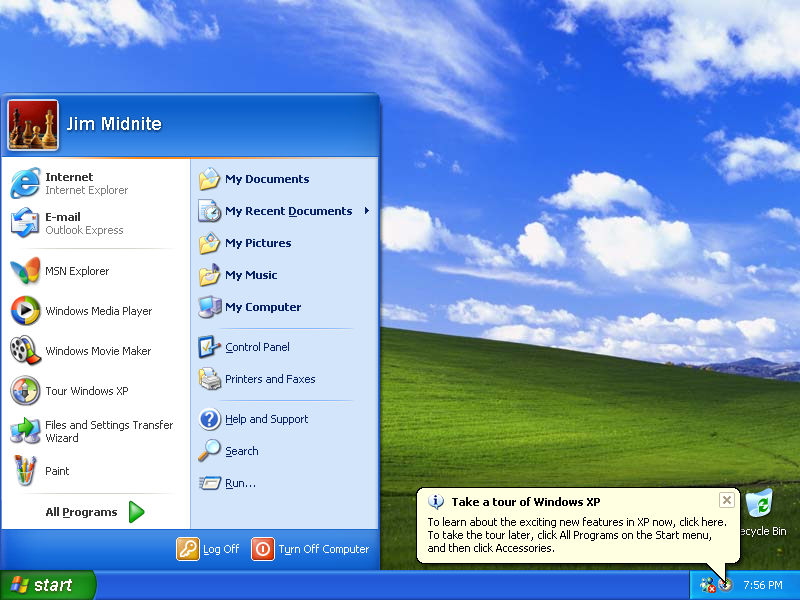
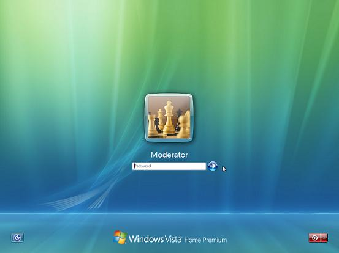
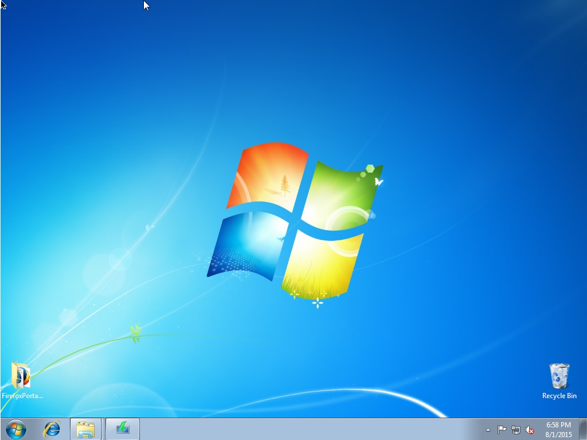

Here is a funny little prank you can play on your friends/coworkers/whoever. These Javascript powered webpages will mimic the Windows (and soon, other operating systems) update or welcome screen.
At the end of the update, a fake Blue Screen of Death will appear... At that point you can tell your friend to shut off his PC, or let him know he just got pranked ;)
This site is a public domain clone of Fakeupdate.net which in all honesty is probably better. You can grab the source code here.
As this is in the public domain you can host it on your own website or blog or whatever, and you can modify it in any way you want. Credit is not required but is appreciated!
Reference sheet - win10 = Fake "Upgrading to Windows 10", update = "Configuring Updates", welcome = permanent "Welcome" screen.
Press "enter" to trigger fake BSOD, press "F11" to enter full screen mode.
|  |  |  |
| Windows XP | Windows Vista | Windows 7 |
| Generic: win10 update welcome | Home Premium: win10 update welcome | Ultimate: win10 update welcome |